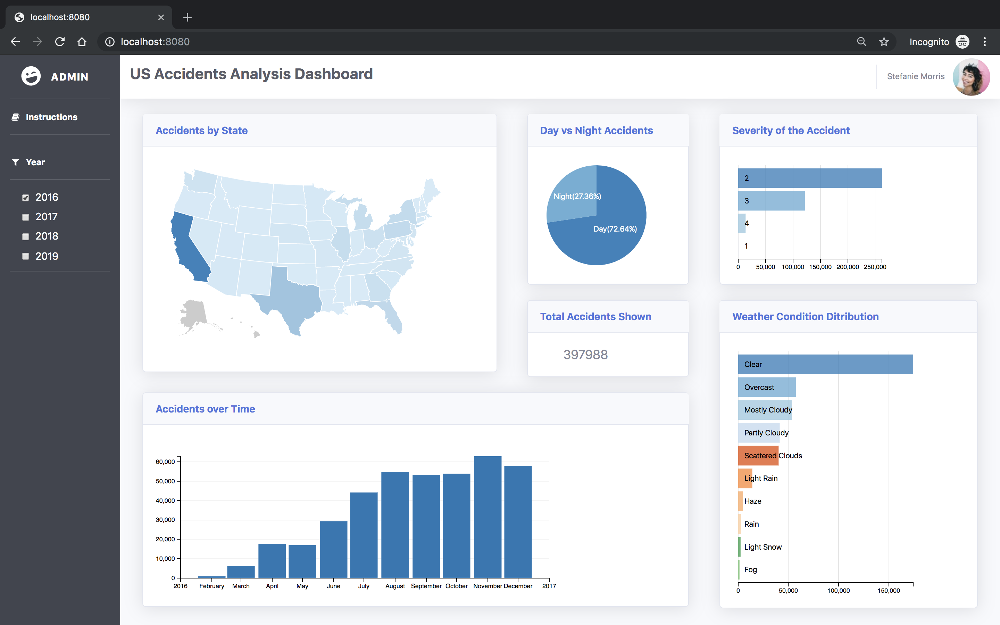
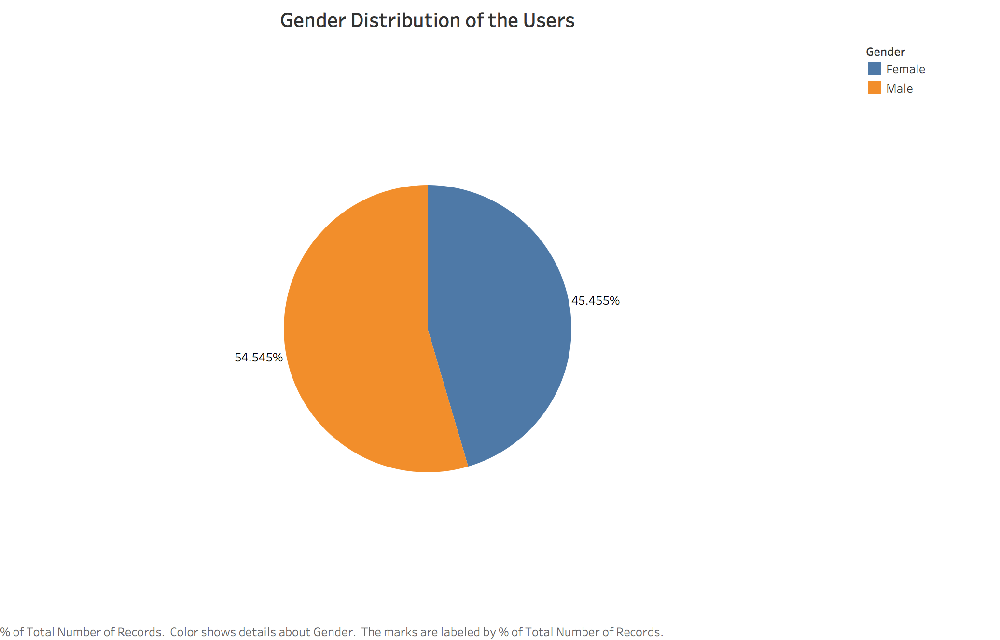
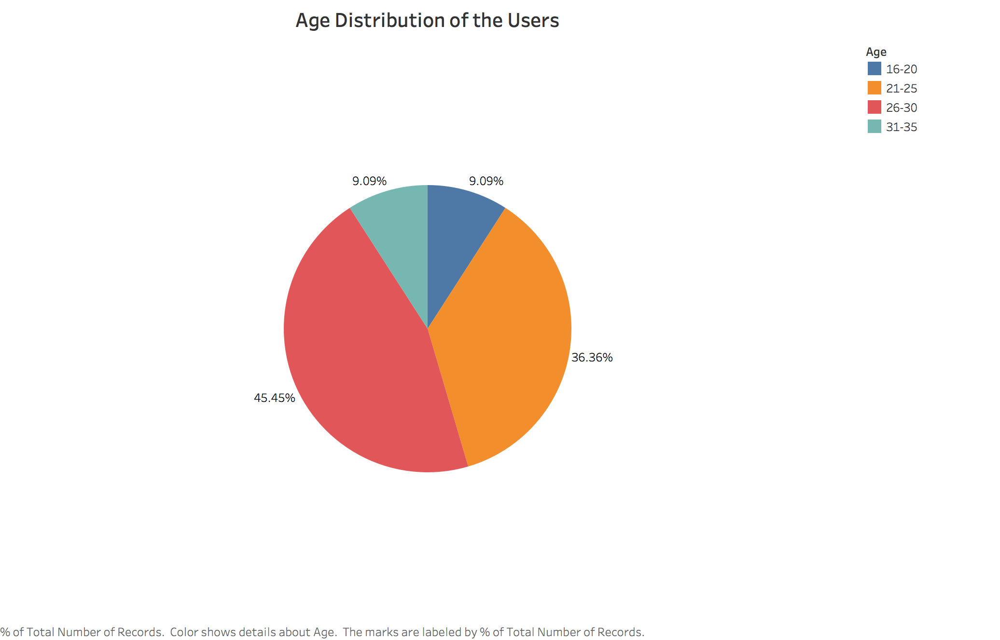
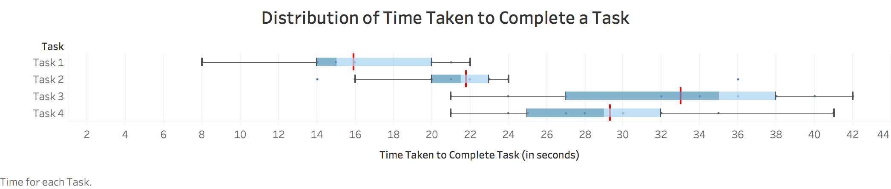
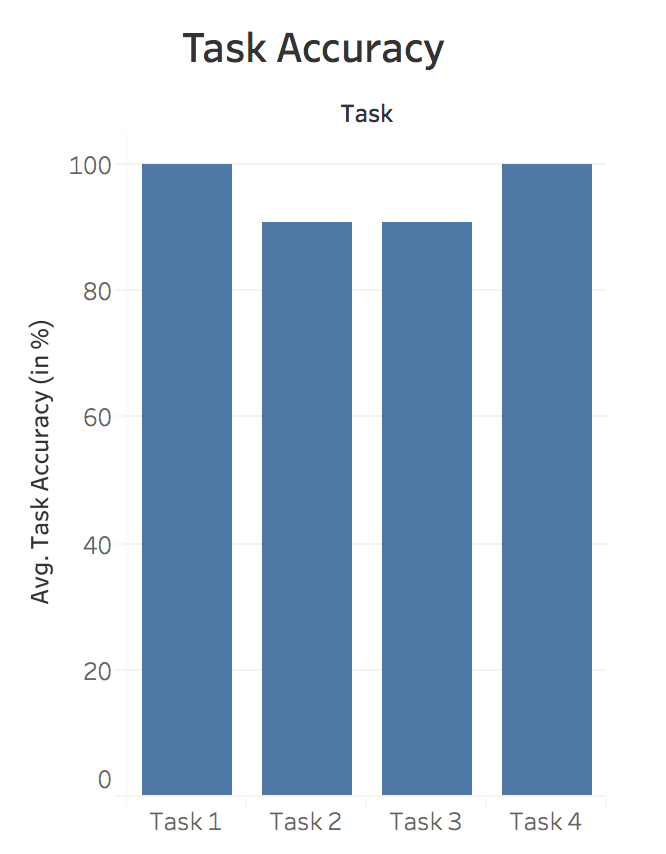
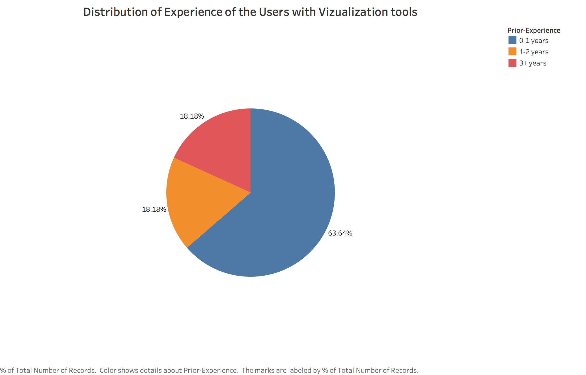
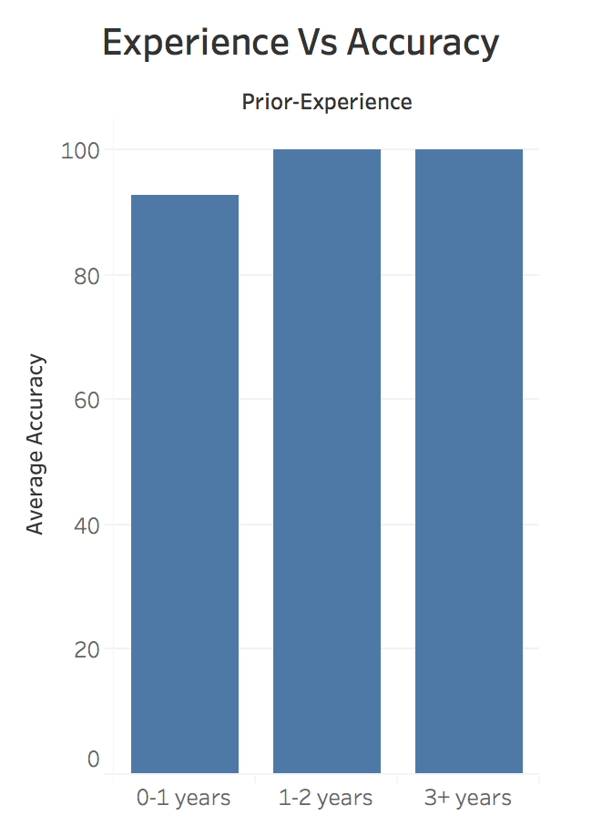
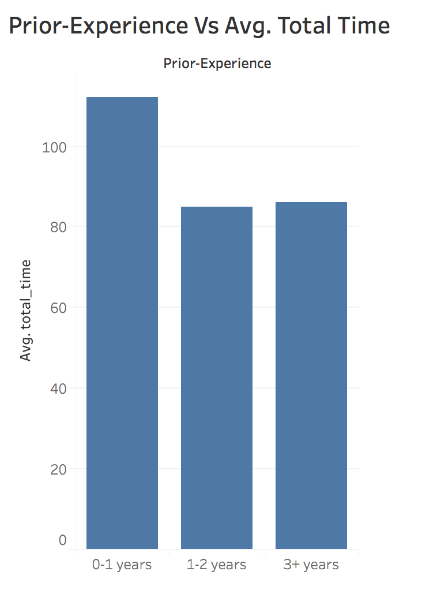
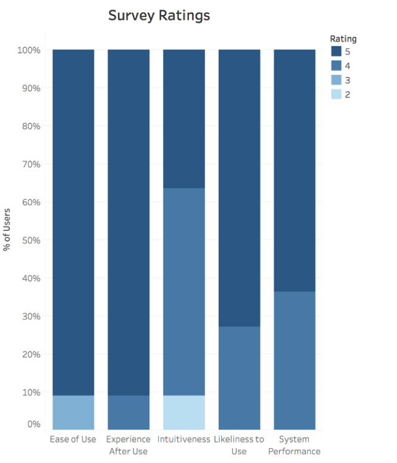

The above two plots shows the demographics of the users. The users are almost equally distributed with respect to gender. 80% of the users belong to the age group of 21-30 years.
Assignment 4: Evaluating Visualizations
Abhilasha Sancheti — sancheti@umd.edu
Description of A3
The tool built in A3 presents the multiple visualizations for US accidents datasets found here. The interface shows 5 visualizations along with a side bar to filter based on year. There is also a link to the instructions page on the side bar. The 5 visualizations and their interactions are described below.
- Accidents by State: This visualization shows the distribution of number of accidents across states. The color saturation represents the number of accidents. Darker the color, more the number of accidents. You can select/deselect one or more states in the visualization and dynamically query based on that filter. The change will reflect in all the other visualizations.
- Day vs Night Accidents: This visualization shows the percentage of accidents that take place in a day vs night. Selecting any one arc will filter all the charts.
- Severity of the Accident: This visualization shows the distribution of accidents with respect to the severity level. 1 is the least severe and 4 is the most severe. Similar kind of interaction is allowed here, users can select/deselect one or more bars and dynamically query the accidents data.
- Accidents over Time: This visualization shows the number of accidents that occured in the selected year(s) by month. A brush can be selected on the chart to select a range of months and filter data according to it.
- Weather Condition Distribution: This visualization shows the distribution of accidents with respect to the weather condition. Only top 10 weather conditions are plotted here. You can select/deselect one or more bars and dynamically query the data for only those weather conditions.
Research Questions
- QUESTION 1: How fastly, efficiently and accurately users are able to complete the given tasks? Does prior experience with similar tools influence the efficiency of users in completing the tasks?
- QUESTION 2: How easy and enjoyable is it to use the tool?
Data Collection
Each of the users is first asked to explain what the tool shows and allow them free time to interact with the tool. Next, the users are asked to find answers to 4 tasks with three levels of difficulty.
- Level 1: Most of the accidents occur with what level of severity overall from 2016-2019?
- Level 2: What is the total number of accidents that occurred in Florida (FL) with severity level 4 from 2016-2019?
- Level 3: Where did the most severe (severity level 4) accidents occur during light snow from 2016-2019?
- Level 3: In 2018, which were the top three months with the most severe (severity level 4) accidents that occurred in the night?
The user-study was done using three survey forms, pre-survey, during-survey, and post-survey. In the pre-survey form the users are asked questions relateed to their demographics- gender, age and prior-experiencee with visualization tools. The during-survey lists the above tasks and the users are asked to find answers to the task questions. Time taken by users is logged with the help of 'Task Start' and 'Task Done' buttons. Furthermore, the interactions made by the users is also logged using console.log to understand the order of actions taken by the users to find the answers. Lastly, the users are asked to fill post-survey which comprised of questions related to the usefulness, ease of use, experience with the tool. Users were also aksed to list any insights that they could find from the tool about US accidents. The whole user study was recorded for referencing in future. All this information collected from the users were used to answer the research questions about accuracy, efficiency and usefulness of the tool.
Discoveries & Insights
Quantitative Study



This plot shows the distribution of time taken by users to complete each task. We can observe from the plot that as the difficulty level of the task increases from Task 1 to Task 3 the average time taken by the users also increases. However, one interesting thing to notice here is that once the users get familiar with the difficulty level, they take less time. Task 4 has the same difficulty level as Task 3 but on an average users take lesser time to answer the Task 4 which suggests that once users get an idea of the way to approach task of a particular difficulty level then they can find answers faster.

This plot shows the accuracy per task. We can observe from the plot that accuracy for Task 2 (level 2) and Task 3 (level 3) is not 100%. However, for Task 4 the accuracy is 100% which provides an evidence to the observation made from the earlier plot.

This plot shows the distribution of the prior-experience of the users with the visualization tools. More than 60% of the users under study had less than one year of experience.
 These two plots shows the relation between the prior-experience of the users with a vizualization tool and its impact on accuracy and average time taken to complete all the tasks. We can notice that prior experiencee does influence the accuracy and time taken to complete the tasks. One possible reason for wrong answers was that users did not filter the data with all the conditions, probably because they forgot to do so.

Qualitative Study
This plot presents the various ratings given by the users after completing the task. It is evident from the 'Experience After Use' plot that all the users had a great experience (rating is 4 or 5) with the tool and they enjoyed using it. 90% of the users gave ratings 5 with respect to 'Ease of Use' and either of 4 or 5 with respect to 'Intuitiveness' of the interactions and the tool. Users founf the system performance (latency) to be very good (rating either 4 or 5). 'Likeliness to Use' represents how likely the users are to recommend this tool to other users and also use themselves in future. Overall, the tool gets reasonable ratings with respect to its usefulness, system performance, and human performance.
From the recording of the users while they were interacting with the tool and explaining it by themselves, I observed that most of the users had difficulty in understanding the 'Severity of the Accidents' plot. Also, many of the users were not familiar with the US map which is why they took more time in finding a particular state, although a tooltip was incorporated in the tool. Probably more explicit labeling of states would have been more helpful. It took the users a while (when they made couple of interactions with the tool) to understand that all the charts are connected and selection in one plot will lead to filtering of all the plots. I also asked users to list down some insights that they found while using the tool and users came up with the following insights:
- "Most of the accidents happens with clear weather and during the day."
- "North Dakota and South Dakota are accident free if the weather is good."
- "Most accidents happen due to human errors, I was expecting it be more due to weather conditions."
Reflection
Three Concrete Takeaways
TAKEAWAY 1: A better labeling of the axis helps in reducing the ambiguity. For example, labeling the axis in severity chart as 'Level 1' instead of just '1' would be more intuitive to understand.
TAKEAWAY 2: After looking at the interactions used by users while doing the tasks, I observed that all the users used the checkboxes to filter the data for years and no one used the brushing feature to select the range. This leads to a conclusion that people prefer easy and familiar interactions rather than fancy and new. I can improve upon the type of interaction used for selecting a range. May be a slider would have been more familiar than brushing.
TAKEAWAY 3: From the qualitative study, one takeaway to improve the tool is to mention range for each scale and have tooltips appear faster. For instance, in case of the US map, although by hovering over the state users can get the number of accidents and name of the state, users suggested to have it in a range scale along with the map.
Final Takeaway
To sum up, it is good to use simpler and familiar interactions than complicated and fancy since the motive is to find insights from the data faster and easily rather than wasting time in learning the tool to analyze the data. The charts should have unambiguous labelings and all the legends required to understand it.